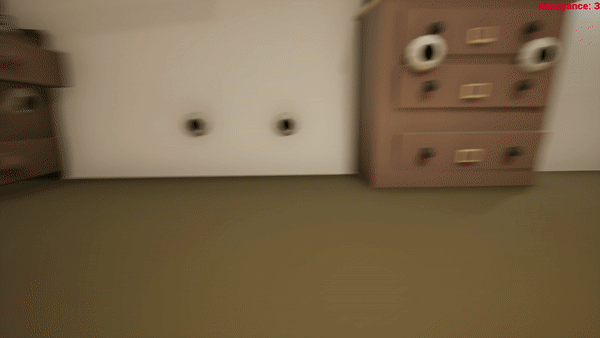
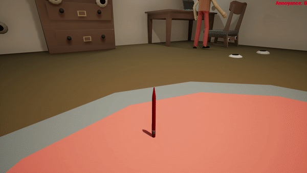
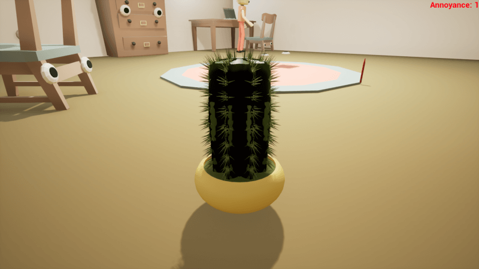
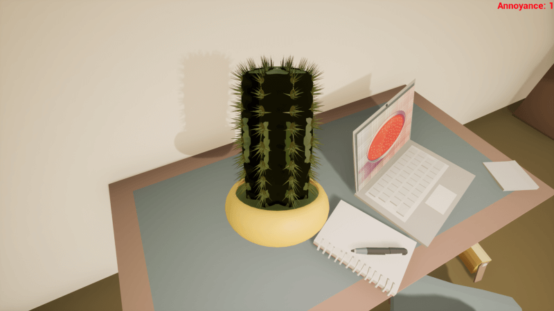
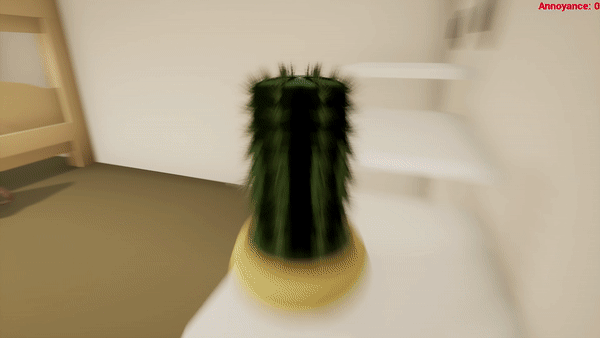
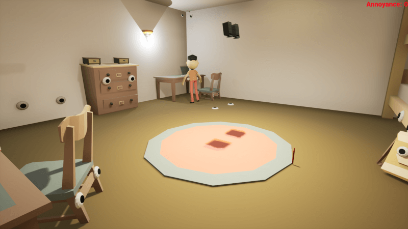
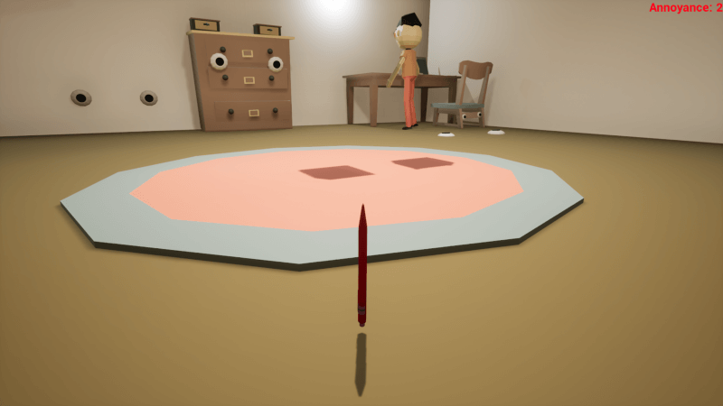
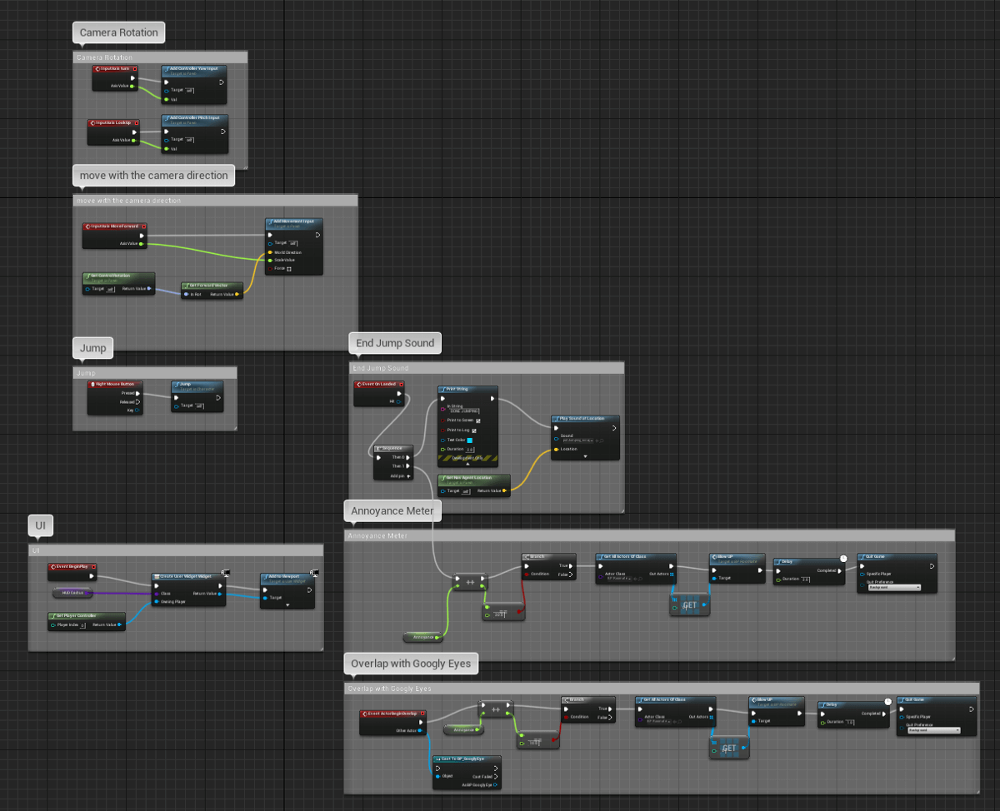
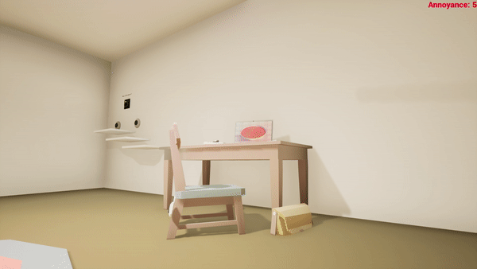

You are living in a student dorm, sharing a room with your roommate. You get annoyed by him everyday, because he puts googly eyes on everything that he can. So it’s time to take revenge and piss off your roommate. There is no “win or lose” in the game; can you piss off your roommate before time runs out?
Role-playing; Casual game; Adventure

You only need a mouse to control the character. Left click can make the character move forward. Right-click to trigger your object action (prototype is set to jump). Move the mouse to change the moving direction of the view.
You will possess an object in the dorm every morning randomly. You should explore the room and find objects that can interact with to annoy the roommate.
Your roommate has an annoyance meter. Every time the character makes interaction with other objects to piss off your roommate, the meter increases. Try to reach the highest point of the meter as fast as possible. Once you reach the highest
point, you will restart the game for a new task.
Different interactions will increase the meter differently. Some interactions may just make small changes. If you cannot find another interaction to trigger the meter for a while, the bar will be decreased (your roommate will calm down as time
passes).e
Each level has a maximum 2 minutes playing time. If you fail to piss off your roommate, you will automatically restart the game and go to the next day.
There are 7 levels in the game, represents 7 days in a week.
The final score will be based on the speed you piss off your roommate, and how many days in a week that you successfully take revenge.
Each level, the location of the objects is slightly different. Your roommate’s location is also different.
You will be assigned to different objects on a different level.


In general, there are only two actions that are relevant to the game. One is to move around your character, the other one is to interact with other objects. We want to create an addictive game experience, we decide to simplify the features in
the game and reduce the learning cost of the game.
Moving around is one of the core features in the game. The player moves the mouse to change to moving direction of the character. Once the player left clicks the mouse, it moves towards the direction. There is a UI that presents the direction
that the character towards (like a compass).
Not every object in the dorm room can be interacted with. The player should figure out check different places in the room and various objects to see what is the best way to use the character to piss off the roommate. For example: If a kettle
moves closer to the laptop, it can pour the boiled water on the laptop. If it moves to the edge of the table, it will fall on the ground and make noise.


Once the meter reaches the highest point, your roommate will make an intense reaction, and scream in the room (with a funny animation). You will go to the next day (level).
If you fail to piss off your roommate in 2 minutes, nothing will happen on your roommate, you will go to the next day, until you finish the entire week.
Refer to the last rule: There is no way to win the game, the final score is calculated by the time you finish the level and the number of days that you succeed the level.
No losing in the game :)



< < back to check other projects
back to top